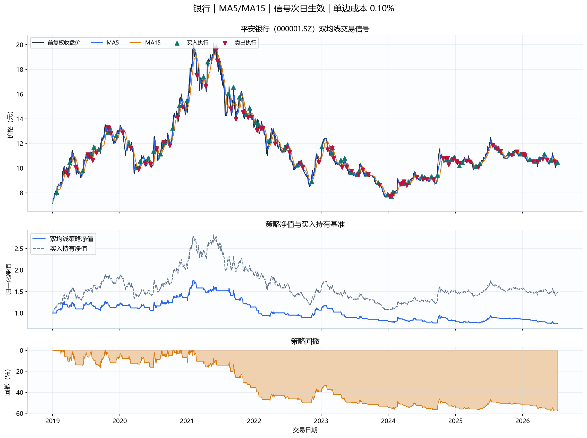
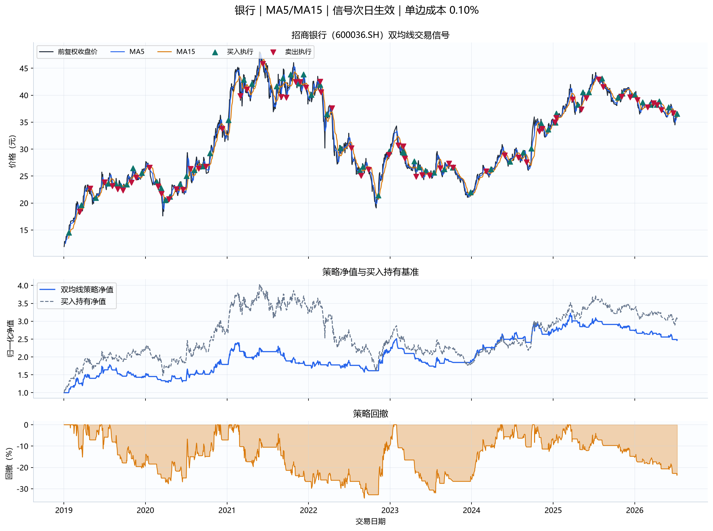
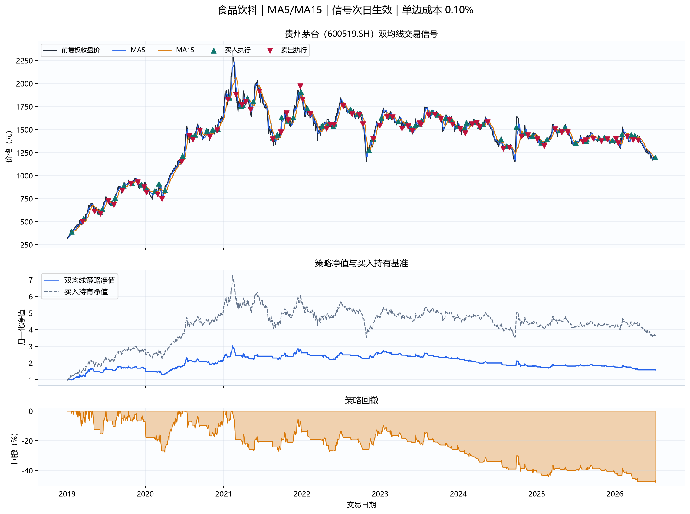
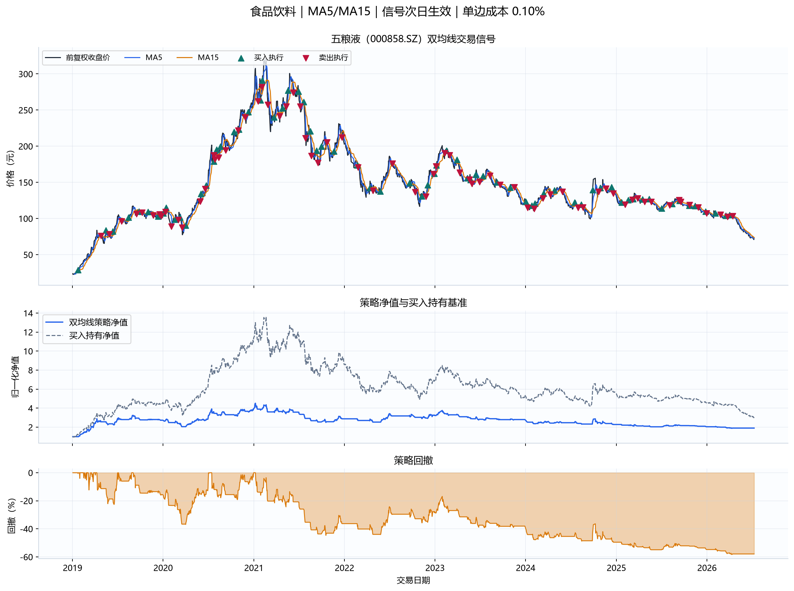
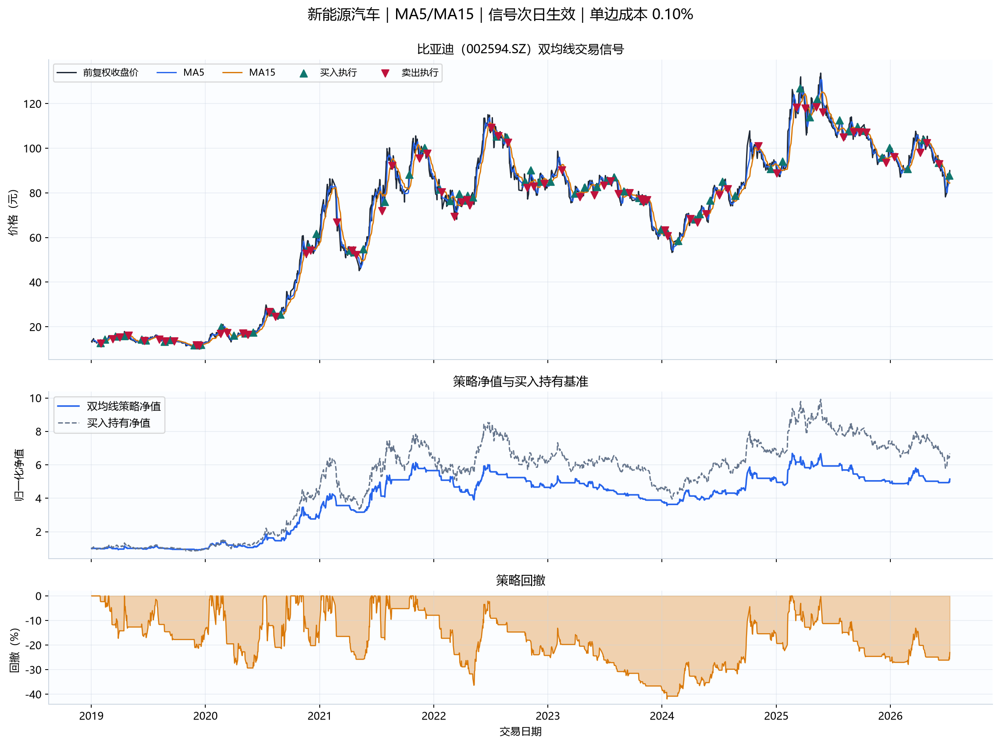
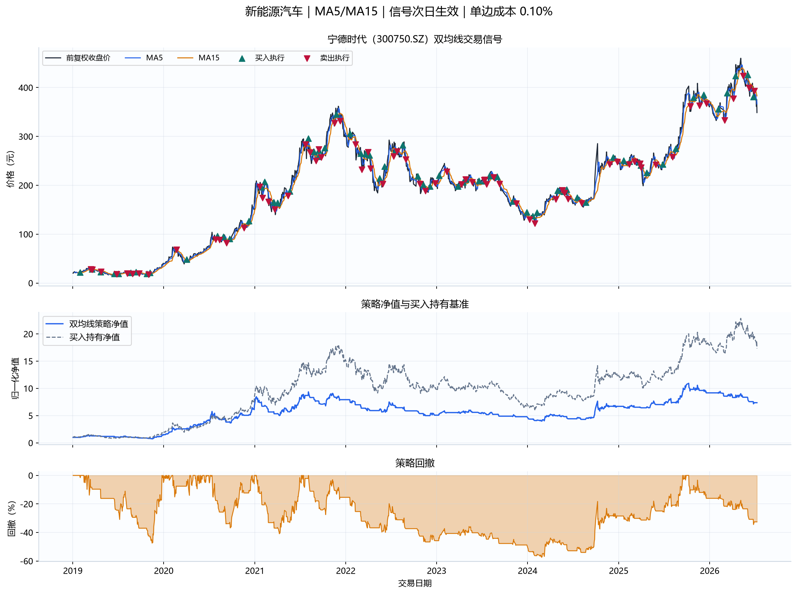
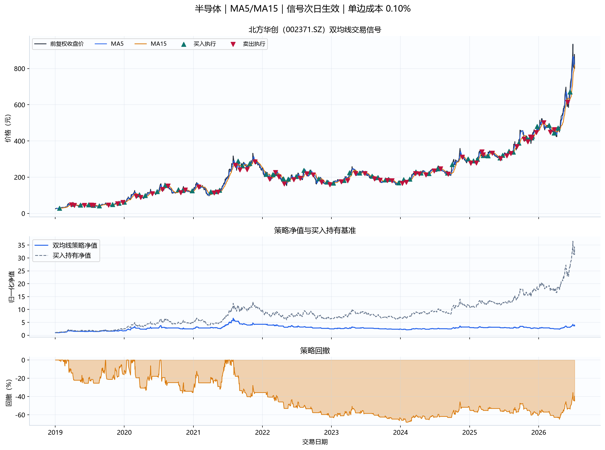
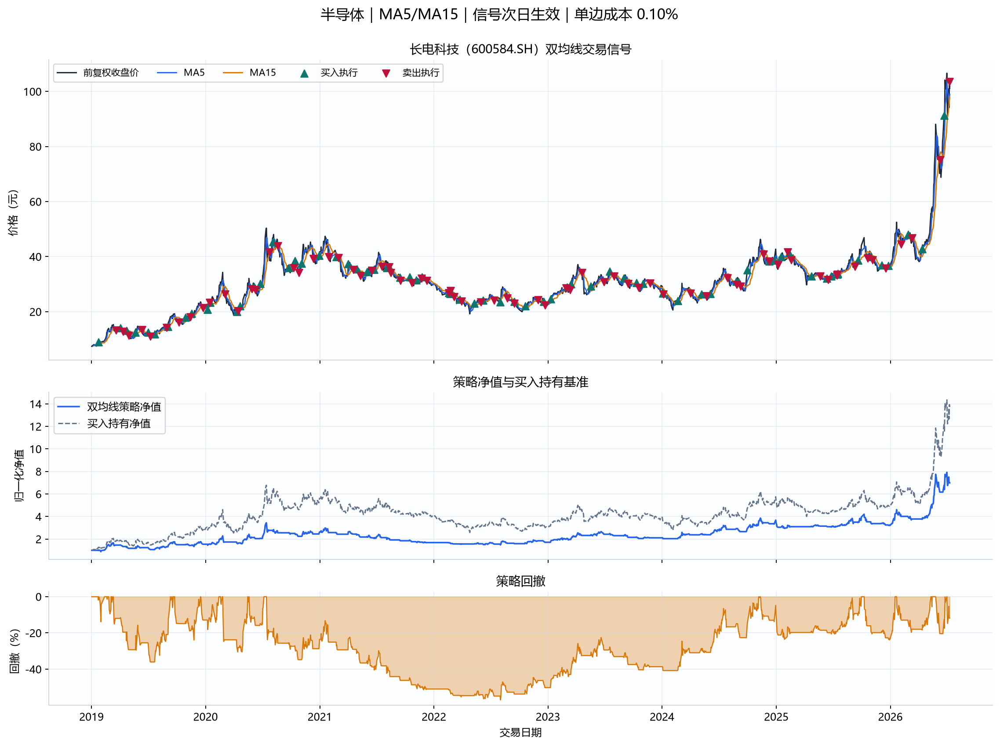
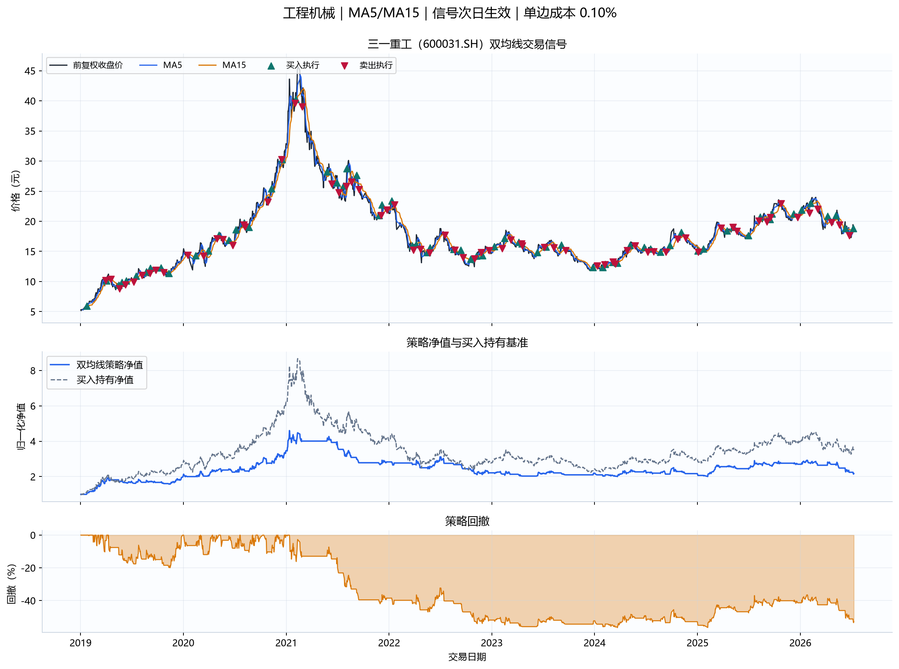
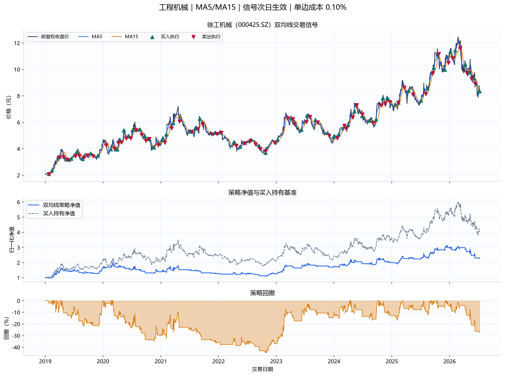

金叉
短期均线从不高于长期均线变为高于长期均线，表示近期价格趋势转强，产生买入信号。
用明确的金叉、死叉规则完成跨行业股票回测，并从累计回报、最大回撤和夏普比率评价策略。
短期均线从不高于长期均线变为高于长期均线，表示近期价格趋势转强，产生买入信号。
短期均线从高于长期均线变为不高于长期均线，表示近期趋势转弱，产生卖出信号。
均线不预测未来，而是确认已经出现的方向；趋势行情更友好，震荡行情容易反复触发。
MA5 首次上穿 MA15、此前为空仓且两条均线均已形成时记录金叉；信号下一交易期应用。
MA5 从高于 MA15 变为不高于 MA15、此前持仓时记录死叉；下一交易期仓位归零。
回测假设：初始资金100,000元，只做多、不加杠杆；单边成本0.1%；无风险利率为0；信号错后一日。
期末净值 ÷ 期初净值 − 1，回答策略最终赚了多少。
净值相对历史最高点的最大跌幅，回答策略最难熬时损失多大。
年化平均收益相对于年化波动的比例，回答风险调整后收益如何。
| parameter | 收益中位数 | 夏普中位数 | 回撤中位数 | 正收益比例 |
|---|---|---|---|---|
| MA5/MA15 | 31.90% | 0.568 | -27.57% | 60.00% |
| MA20/MA60 | 18.66% | 0.409 | -26.48% | 60.00% |
| MA10/MA30 | 17.28% | 0.386 | -28.20% | 70.00% |
| MA10/MA20 | 15.81% | 0.360 | -28.70% | 60.00% |
| MA5/MA10 | 4.89% | 0.207 | -27.19% | 60.00% |
| 股票 | 行业 | 策略回报 | 夏普 | 最大回撤 | 买入持有 | 买入次数 |
|---|---|---|---|---|---|---|
| 长电科技 | 半导体 | 231.21% | 1.425 | -23.84% | 242.63% | 23 |
| 招商银行 | 银行 | 31.34% | 0.686 | -23.71% | 68.94% | 21 |
| 宁德时代 | 新能源汽车 | 53.59% | 0.660 | -34.45% | 141.26% | 22 |
| 北方华创 | 半导体 | 50.02% | 0.655 | -35.21% | 345.29% | 28 |
| 比亚迪 | 新能源汽车 | 32.46% | 0.574 | -27.89% | 41.42% | 22 |
| 徐工机械 | 工程机械 | 33.20% | 0.562 | -27.25% | 71.83% | 22 |
| 三一重工 | 工程机械 | -0.81% | 0.106 | -26.73% | 46.37% | 25 |
| 平安银行 | 银行 | -8.46% | -0.131 | -21.70% | 32.55% | 31 |
| 五粮液 | 食品饮料 | -32.04% | -0.713 | -34.38% | -42.12% | 24 |
| 贵州茅台 | 食品饮料 | -30.96% | -0.872 | -30.88% | -24.29% | 25 |
阅读重点：正收益不等于择时有效。MA5/MA15 样本外表现最好的股票是 长电科技，但只有 1/10 战胜买入持有。










| 股票 | 行业 | 起始日期 | 截止日期 | 交易日数 | 重复日期 | 关键缺失 | 数据来源 | 通过检查 |
|---|---|---|---|---|---|---|---|---|
| 平安银行 | 银行 | 2019-01-02 | 2026-07-10 | 1823 | 0 | 0 | TuShare Pro: daily + adj_factor | True |
| 招商银行 | 银行 | 2019-01-02 | 2026-07-10 | 1823 | 0 | 0 | TuShare Pro daily 日期校验 + 东方财富前复权行情 | True |
| 贵州茅台 | 食品饮料 | 2019-01-02 | 2026-07-10 | 1823 | 0 | 0 | TuShare Pro daily 日期校验 + 东方财富前复权行情 | True |
| 五粮液 | 食品饮料 | 2019-01-02 | 2026-07-10 | 1823 | 0 | 0 | TuShare Pro daily 日期校验 + 东方财富前复权行情 | True |
| 比亚迪 | 新能源汽车 | 2019-01-02 | 2026-07-10 | 1823 | 0 | 0 | TuShare Pro daily 日期校验 + 东方财富前复权行情 | True |
| 宁德时代 | 新能源汽车 | 2019-01-02 | 2026-07-10 | 1823 | 0 | 0 | TuShare Pro daily 日期校验 + 东方财富前复权行情 | True |
| 北方华创 | 半导体 | 2019-01-02 | 2026-07-10 | 1823 | 0 | 0 | TuShare Pro daily + TuShare legacy qfq | True |
| 长电科技 | 半导体 | 2019-01-02 | 2026-07-10 | 1818 | 0 | 0 | TuShare Pro daily + TuShare legacy qfq | True |
| 三一重工 | 工程机械 | 2019-01-02 | 2026-07-10 | 1823 | 0 | 0 | TuShare Pro daily + TuShare legacy qfq | True |
| 徐工机械 | 工程机械 | 2019-01-02 | 2026-07-10 | 1800 | 0 | 0 | TuShare Pro daily + TuShare legacy qfq | True |
股票池按当前代表性人工选择，存在幸存者偏差；历史最优参数也可能过拟合。本页用于教学与研究演示，不构成投资建议。